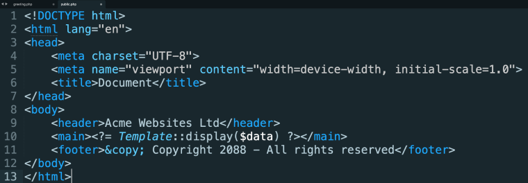
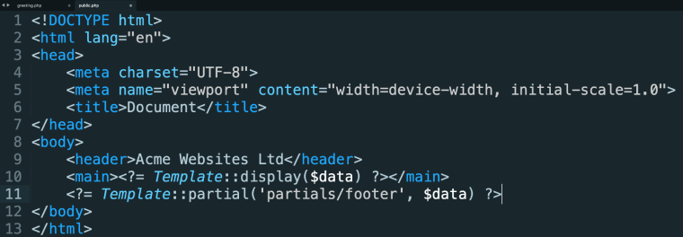

Some developers like to break their page templates up into partials (sometimes referred to as 'components'). A partial is a section of code that is usually associated with a particular section or function, within a greater page template. Examples of partials could be:
Using partials is as simple as saving a view file inside your partials directory and using Trongate's in-built 'Partial' method to load your partial. For example,
<?= Template::partial("partials/footer") ?>
As you would expect, partials can receive, display and manipulate data that has been passed in from your calling module. This can be easily achieved by passing in a $data array as an argument. For example,
<?= Template::partial("partials/footer", $data) ?>
Below is an example of a template that does not use any partials:

Here's the same template but with the footer now being called as a partial:
